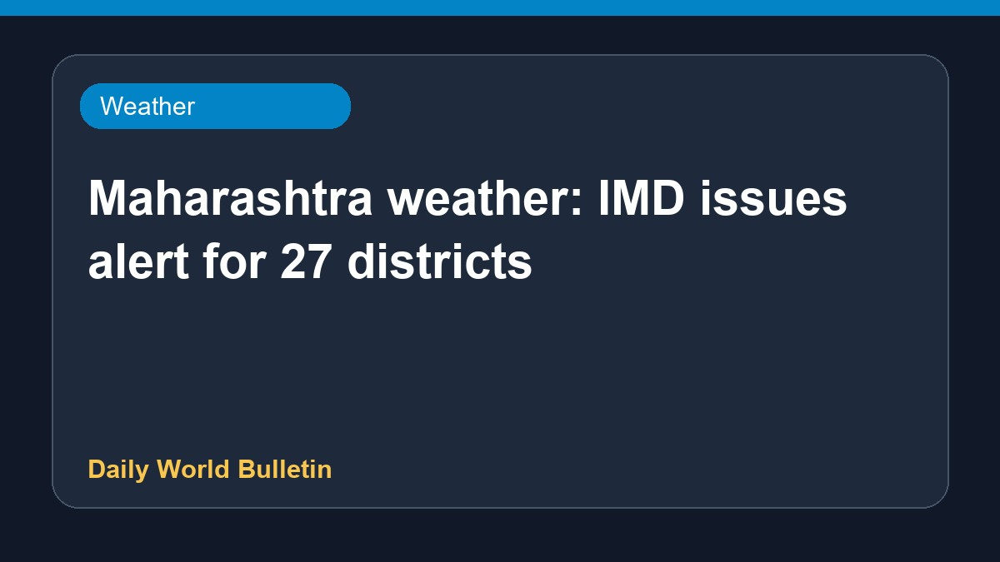

Maharashtra weather: IMD issues alert for 27 districts

The India Meteorological Department has issued weather alerts for 27 districts across Maharashtra. Residents and local authorities are monitoring the situation closely following the latest meteorological forecasts. Information regarding potential school closures and safety measures remains limited as official updates are awaited. Citizens in the affected regions are advised to stay updated through official weather bulletins and take necessary precautions during this period.
Original source: Weather News Sources
Maharashtra weather August 14: IMD issues alert for 27 districts, will school be closed today? – Check foreca - India.com ↗
Maharashtra weather August 14: IMD issues alert for 27 districts, will school be closed today? – Check foreca - India.com ↗